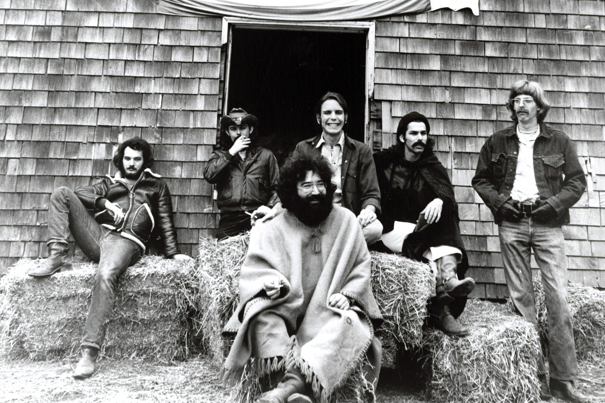

III. Artists ↑
14. Grateful Dead

The Grateful Dead had the most complex, elusive and multi-layered identity of any band to emerge in the sixties. As a result, there is no way to easily summarize the group’s appeal or its body of work. In order to adequately describe them as an artistic unit, we need to discuss several related but distinct characteristics of the band.
- 1. A Philosophy
- 2. Live Performances
- 3. Singer/Songwriters
- 4. A Tribal Community
- 5. A Love for Americana
1. A Philosophy
The band was formed in 1965/1966, and in that latter year performed at the Human Be-In at Golden Gate Park in San Francisco. Timothy Leary spoke at that same event, using the phrase “Turn on, Tune in, Drop out.” Leary later explained, in his 1983 autobiography Flashbacks, what this injunction meant to him.
“Turn on” meant go within to activate your neural and genetic equipment. Become sensitive to the many and various levels of consciousness and the specific triggers that engage them. Drugs were one way to accomplish this end. “Tune in” meant interact harmoniously with the world around you – externalize, materialize, express your new internal perspectives. “Drop out” suggested an active, selective, graceful process of detachment from involuntary or unconscious commitments. “Drop Out” meant self-reliance, a discovery of one’s singularity, a commitment to mobility, choice, and change.
This is probably as good a summary as any of the philosophy that seemed to inform the Dead and their work. And while many groups from the sixties expressed similar thoughts in their lyrics, there was probably no artistic unit from that era that so consistently exemplified such a philosophical stance in its work and in the lives of its band members.
The band’s philosophy also drew heavily on that of the Beat Generation, with Neal Cassady serving as a bridge between the two generations, since both Neal and the Dead worked with Ken Kesey in the early days of his psychedelic adventures with the Merry Pranksters. All of the following ideas can be traced back to the heritage of the Beats:
- being continuously “On the Road”;
- spinning an ongoing, never-ending narrative;
- lacking any financial ambition;
- mind expansion through the use of psychedelics;
- avoiding any vestiges of stardom;
- pursuit of alternative forms of religious experience;
- indifference to mainstream cultural norms;
- tribal bonding.
All of these ideas and more came from the Beats, and pervaded the lives and music of the Dead. The band’s very name reflects this influence, conjuring up images of the Tibetan Book of the Dead and the Mexican celebration called the Day of the Dead, and expressing the band’s disinterest in pursuing anything like the normal American post-war linear lives involving education, careers, material acquisition and the formation of nuclear families.
2. Live Performances
Many rock groups in the sixties were somewhat divided in terms of their allegiances to studio recording vs. live performances. Most artists of the era, like Phil Spector, The Beach Boys and The Beatles, were focused on creating recordings as works of art that could be shared as widely as possible, and never be sullied by the sands of time.
The Dead, on the other hand, gave themselves over to their live performances. After their first couple of albums, they frankly adopted a system in which they would turn out a new batch of songs, rehearse them a bit, go to the studio to record them in a quick and efficient fashion, and then start to work the best of the new songs into their live performances.
The group would perform for several hours at each show, using high quality sound equipment, and made a point of avoiding repetition, with each performance of any particular song being unique, and their set list varying from night to night.
This style of work elicited some unique traits in their fans: known as “Dead Heads,” the group’s most ardent followers would often travel from one show to the next, and would trade bootleg recordings of their various live shows.
As players, Jerry Garcia was best known for his lead guitar work, but Phil Lesh on bass, Bob Weir on rhythm guitar, and both Bill Kreutzmann and Mickey Hart on drums were all able, creative and consistent contributors to the band’s sound.
The band’s preference for improvisational live performance was also an authentic expression of the group’s philosophy. The band members turned on to their many and various levels of consciousness, they interacted harmoniously and spontaneously with their fellow band members and their audience, and they discovered their own singularity, dropping out from the music’s industry drive to create stars who recorded top-selling albums and singles.
That the band was able to keep this up for thirty years – until Jerry Garcia’s tragic death in 1995 – speaks to the sincerity, coherence and durability of the band’s philosophical and artistic ambitions.
3. Singer/Songwriters
The Grateful Dead had an unusual arrangement for its songwriting chores. Although Robert Hunter did not perform with the band, he wrote most of the group’s best lyrics, with Jerry Garcia typically providing the music to go with the words, and singing most of the songs they had cowritten.
Even though Garcia didn’t pen the lyrics, he and Hunter were so attuned to each other that together they functioned almost as a single singer/songwriter, with Garcia’s vocals and guitar work articulating the meaning behind the lyrics, as well as the words themselves.
While other songwriters of the era were exploring contemporary themes, Hunter’s words expressed timeless aspects of the human experience, often transporting the listener out of their everyday contemporary reality and grounding them in some deeper, more transcendent aspects of their lives.
Take these words from “Dark Star”:
Dark star crashes, pouring its light into ashes.
Reason tatters, the forces tear loose from the axis.
Searchlight casting for faults in the clouds of delusion.
Shall we go, you and I while we can,
Through the transitive nightfall of diamonds?
Or these from “Franklin’s Tower”:
In another time’s forgotten space,
Your eyes looked through your mother’s face,
Wildflower seed on the sand and stone,
May the four winds blow you safely home.
Or these from “Box of Rain”:
Walk into splintered sunlight,
Inch your way through dead dreams to another land.
Maybe you’re tired and broken,
Your tongue is twisted
with words half spoken
and thoughts unclear.
What do you want me to do,
to do for you, to see you through?
A box of rain will ease the pain,
and love will see you through.
Although seemingly simple, Hunter’s lyrics often had amazing historical depth. As one example, see Andrew Shalit’s essay on “Franklin’s Tower”, in which he explains that almost all of the song consists of oblique references to Benjamin Franklin’s and others’ thoughts on how to best cast the American Liberty Bell.
The quality of Hunter’s work with the Dead stands up well alongside the work of other singer/songwriters from the era, including that of luminaries such as Jackson Browne, Bob Dylan and Jesse Winchester. Hunter had a unique vision that he expressed consistently, with great beauty and diversity, but also had a dedication to his craft that drove him to hone each song until it stood out as another unique gem to be added to his body of work. And the music provided by other band members also brought something new and unique to each song.
4. A Tribal Community
The Dead had a unique approach to community. Although Jerry Garcia was always the presumptive leader of the band, it was a role he downplayed, striving for an egalitarian approach to music-making.
This communal approach extended to the audience as well, with the dancing, brightly clothed audience members serving as a distinctive element of the group’s live shows.
As more and more audience members began taping the group’s shows, the band eventually made the unusual decision of condoning this activity, and even providing designated spaces for tapers at their concerts, so their microphones and other apparatus wouldn’t block the views of other concertgoers. The trading of such tapes as a strictly non-commercial activity then became yet another communal element of the band’s activities.
Beginning in 1971, John Perry Barlow became a second lyricist for the group, generally with Bob Weir providing the music, and the group’s acceptance of this second songwriting team was yet another indication of the group’s egalitarian impulses.
5. A Love for Americana
It has become fashionable lately to use the term “Americana” to refer collectively to a group of artists, songs and musical traditions that share an appreciation for the deep roots of American music, especially as performed by individuals or small groups, with little help or intermediation or even interest from commercial institutions.
While this term was rarely if ever used to describe the Grateful Dead while they were active, it’s certainly applicable to them in hindsight.
Garcia started out musically playing bluegrass music on guitar and banjo. He then played as part of a jug band, before founding the Grateful Dead. Robert Hunter remembers him initially as a “folk musician.”
And even though the Dead’s music came to depend heavily on the modern technology of electric guitars and LSD, two of the group’s finest studio albums, Workingman’s Dead and American Beauty, used primarily acoustic instrumentation.
In live performance, the group often covered songs by others, including blues, R&B, country and early rock’n roll, all now considered staples of Americana music.
In an interview with Rolling Stone in 2015, Hunter characteristically expresses regret for using the word “styrofoam” in the song “Mississippi Half-Step Uptown Toodeloo,” remembering Garcia saying “This is so uncharacteristic of your work, to put something as time dated as Styrofoam into it.” In the same interview, Hunter also pointed out that Garcia disliked songs with political themes in them, since they tended to lose relevance so quickly.
The Dead’s music, including Hunter’s lyrics, betray a deep love for American history, and especially the music and concerns of common working men and women. Many of the Dead’s songs seem to self-consciously present us with characters from our American past, much in the vein of The Band's self-titled second album, but in truth few of the Dead’s songs contain any clues tying them with any certainty to the decades for which they were written. Instead, they seem to belong to an unbroken stream of American experiences starting in revolutionary times and continuing into the 20th century. Most of the events in these songs could have happened yesterday, or 100 years ago.
And so, in multiple ways – choice of songs, choice of lyrics, a preference for live performances, a love of improvisation – the Dead very consciously thought of themselves as an American musical group following and extending American musical traditions.
Summary
All of these various elements of the Dead’s multi-faceted identity make it hard to communicate the full scope of the band’s appeal to the casual listener. Name almost any other significant rock group of the sixties or seventies, and I can refer you to a few recordings that, with some brief commentary, will you a good idea of who the band was and what they were about. But the Grateful Dead resist any such easy summation.